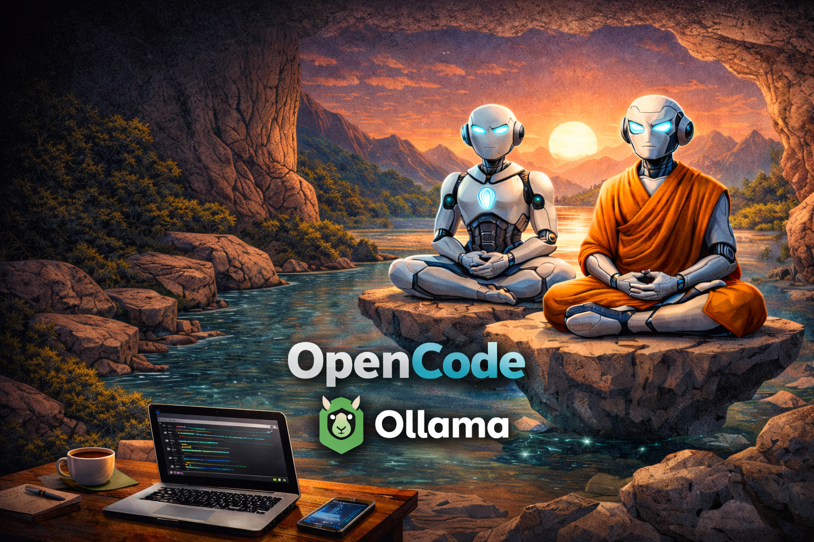

I've been testing a lot of AI coding tools this year — enough to have strong opinions about all of them. But there was one I kept seeing mentioned in threads and community channels that I hadn't tried yet: OpenCode.
People were enthusiastic — not in the "look at this shiny demo" way, but in a more low-key, practical way. The recurring theme was the Zen models. I was skeptical. I had tools I trusted. Why add another one to the rotation?
The Zen Models: Free Power You Don't Expect
The first thing that caught me off guard wasn't the CLI. It was the Zen model tier.
OpenCode ships with a set of open models — the Zen family — that are free to use within the tool. I expected them to be the "good enough for simple things" kind of free. What I got was something considerably more capable than that framing suggests.
Zen models handle real multi-file refactors. They follow architectural context from instruction files. They reason about side effects and edge cases. They're not GPT-3.5 tier dressed up in new branding — they feel like first-class reasoning models.
The Zen models aren't a free tier that upsells you to something better. They're a legitimate tool. That surprised me more than anything else.
For the kind of work I do — full-stack TypeScript and Node.js, occasional .NET, lots of infrastructure — the Zen models covered probably 70% of my prompts without needing to switch to a premium provider. That changes the math on daily usage significantly.
Running Fully Local with Ollama

One thing that genuinely stood out: OpenCode integrates cleanly with Ollama, which means you can point it at a locally running model and keep everything on your machine. No remote API calls, no data leaving your environment. For work involving sensitive codebases or internal infrastructure, this matters.
The config is straightforward — you set the provider to Ollama and specify whichever model you have running locally. From that point, OpenCode behaves exactly the same way, just against your local inference server instead of a cloud endpoint.
On top of that, OpenCode lets you disable telemetry in the config file. If you want to be certain no usage data is being sent anywhere, you can turn it off explicitly. Both things together — local models and no telemetry — make it a reasonable choice for environments where privacy or compliance rules out cloud-based tools entirely.
The CLI-First Approach
Most AI coding tools are IDE-first. OpenCode is terminal-first, and that's a deliberate choice you either click with or you don't. I clicked with it.
Like most tools in this space, OpenCode supports the concepts that are becoming standard across the ecosystem: agents (specialized instances with a defined role, model, and context), skills (reusable instruction modules loaded as markdown files), and workflows (configurations that chain agents together and define handoff conditions). These ideas aren't new or unique to OpenCode — you'll find equivalents in Claude, Codex, Antigravity, and others.
What OpenCode brings is a clean, config-file-driven way to define all of this from the terminal. Everything lives in markdown files in your repo. The config format is readable. Running a workflow is a single command. For a terminal-native workflow, it feels natural in a way that IDE-based tooling sometimes doesn't.
Building Specialist Agents
The best way to understand OpenCode's power is to walk through what specialist agents actually look like in practice. I'll describe three I've set up and find genuinely useful every day.
Agent 1: The E2E Specialist
End-to-end testing is one of those areas where most agents fail in interesting ways. They write tests that are syntactically correct but semantically fragile — tests that pass in isolation and shatter in CI because they don't understand the app's real flows, state management patterns, or async behavior.
An E2E specialist agent solves this by having deeply contextual skills loaded before it touches any test file.
--- name: e2e-specialist model: zen-1 description: Specialist in end-to-end testing with Playwright skills: - skills/playwright-conventions.md - skills/app-flows.md - skills/selectors-guide.md tools: - read_file - write_file - run_tests context: - src/ - tests/e2e/ --- You are an E2E testing specialist. Your only job is to write, maintain, and debug end-to-end tests using Playwright. You follow the conventions defined in your skills strictly. You never write unit tests or integration tests — redirect those requests to the appropriate agent. When writing a new test: 1. Read the relevant user flow from skills/app-flows.md 2. Check existing selectors in skills/selectors-guide.md before creating new ones 3. Follow the page object pattern defined in skills/playwright-conventions.md 4. Always include a meaningful test description and arrange/act/assert comments
The skills attached to this agent are where the real value lives. playwright-conventions.md codifies how the team uses Playwright — page object patterns, custom commands, retry strategies, and CI configuration hints. app-flows.md describes the critical user journeys in plain language. selectors-guide.md is a catalog of stable test IDs and how to find elements correctly in the app.
With these skills loaded, the E2E agent doesn't guess at structure. It reads the conventions and applies them. The result is tests that look like they were written by a senior QA engineer who's been on the project for six months — not by a model that's seeing the codebase for the first time.
Agent 2: The Code Review Specialist
Code review is something I've tried to delegate to AI tools many times, with mixed results. Generic models give generic feedback: "consider adding error handling," "this function is too long." Technically accurate, practically useless.
A code review specialist agent, equipped with project-specific skills, gives a completely different level of feedback.
--- name: code-reviewer model: zen-2 description: Code review specialist with project conventions and security awareness skills: - skills/coding-standards.md - skills/architecture-decisions.md - skills/security-checklist.md - skills/performance-patterns.md tools: - read_file - git_diff - search_codebase context: - src/ - .github/ --- You are a senior code reviewer. Your job is to review pull request diffs and provide structured, actionable feedback grounded in the project's actual conventions and architecture decisions. Review structure: - **Critical**: Security issues, breaking changes, correctness bugs - **Important**: Convention violations, architectural concerns, missing error handling - **Suggestions**: Performance improvements, readability, test coverage gaps - **Praise**: What was done well (always include at least one) You have access to the full codebase for context. Always check if similar patterns already exist before flagging something as missing. Never suggest adding an abstraction that the codebase doesn't already use.
The architecture-decisions.md skill is particularly important here. It's an ADR log — Architecture Decision Records — written in plain language, explaining why the codebase is structured the way it is. When the reviewer agent has this context, it stops suggesting "you should use a repository pattern" when the team deliberately chose not to, because it knows the reasoning behind that decision.
This turns the code review agent from a generic linter with opinions into something that understands your system.
Agent 3: The DevOps Specialist (GCloud + GitHub Releases)
Infrastructure and release operations were the area where I was most skeptical about delegating to an AI agent. Too much blast radius. Too many non-obvious dependencies. Too easy to make a change that looks right but breaks something in production.
But with the right constraints and skills, the DevOps specialist agent has become one of the most valuable I run.
--- name: devops-specialist model: zen-2 description: GCloud and GitHub releases specialist for staging and production deployments skills: - skills/gcloud-config.md - skills/github-release-process.md - skills/environment-variables.md - skills/rollback-procedures.md tools: - read_file - write_file - run_command - github_api context: - .github/workflows/ - infra/ - deploy/ constraints: - never_delete_resources: true - require_confirmation_for: [production, database, iam] - dry_run_by_default: true --- You are a DevOps specialist for Google Cloud and GitHub releases. You help configure Cloud Run services, manage GitHub Actions workflows, create versioned releases, and coordinate deployments to staging and production. You ALWAYS run in dry-run mode unless explicitly told otherwise. For any action affecting production, IAM, or databases — stop and ask for confirmation before proceeding, even if you think the action is safe. When creating a release: 1. Validate all environment variables are present in the target environment 2. Check that the staging deployment is healthy before promoting to production 3. Create a GitHub release with a properly formatted changelog 4. Tag the commit with the version number following semver conventions 5. Notify via the configured channel (see skills/github-release-process.md)
The constraints block is where safety lives. The agent is configured to dry-run by default, never delete resources, and always ask for confirmation before touching production, IAM, or databases. This isn't just a prompt instruction — it's a structural constraint that survives context window drift.
Building a Workflow: PR Approval and Release to Staging
Individual specialist agents are powerful. Workflows that chain them together are where OpenCode becomes something different — a genuine automation layer for engineering operations.
Here's a workflow I've set up for the full cycle from PR approval to staging release. It uses all three specialists above, plus a thin orchestrator that manages handoffs and conditions.
---
name: pr-to-staging
description: Full workflow from PR code review to staging deployment
trigger: manual
input:
- pr_number: string
- branch: string
---
## Steps
### 1. Code Review
agent: code-reviewer
task: |
Review PR #{{pr_number}} from branch {{branch}}.
Fetch the diff using git_diff and provide a structured review.
Output your review as a JSON object with fields:
- verdict: "approve" | "request_changes" | "comment"
- critical_issues: string[]
- important_issues: string[]
- suggestions: string[]
on_verdict_request_changes: stop_workflow
### 2. E2E Test Generation Check
agent: e2e-specialist
condition: step_1.verdict == "approve"
task: |
Check branch {{branch}} for any new user-facing features or routes
that don't have corresponding E2E test coverage.
If coverage gaps exist, generate the missing tests and output
the file paths created.
Output: { tests_added: string[], coverage_ok: boolean }
### 3. Staging Deployment
agent: devops-specialist
condition: step_2.coverage_ok == true
task: |
Deploy branch {{branch}} to the staging environment on Cloud Run.
Use dry_run: false for this step — staging deployment is approved.
Steps:
1. Build the container image with tag {{branch}}-{{timestamp}}
2. Push to Artifact Registry
3. Deploy to cloud-run/staging service
4. Run smoke tests against staging URL
5. Report deployment status
Output: { deployed: boolean, staging_url: string, smoke_tests_passed: boolean }
### 4. GitHub Release Draft
agent: devops-specialist
condition: step_3.deployed == true
task: |
Create a draft GitHub release for branch {{branch}}.
Generate a changelog from commits since the last release tag.
Tag format: v{{next_semver}} (auto-detect from commit messages).
Set the release as a draft — do not publish until manually approved.
Output: { release_url: string, tag: string }
When this workflow runs, OpenCode orchestrates the four specialists in sequence. Each step receives the output of the previous one. Conditions gate progression — if code review requests changes, the workflow stops. If E2E coverage is incomplete, staging deployment waits.
The whole thing runs from a single command in the terminal:
opencode run workflows/pr-to-staging.md --input pr_number=142 branch=feature/user-onboarding
And you watch it execute — agent by agent, step by step — with full output visibility in the terminal. It's not magic. It's orchestrated specialization, which is something better than magic: it's reliable.
The Value Is in Writing the Skills
This applies to any tool that supports skill or instruction files — not just OpenCode — but it's worth saying clearly: the real value isn't the agent running the file. It's the process of writing the file.
When you write a skill for your E2E agent — your Playwright conventions, your app flows, your selector guide — you're also writing the onboarding document a new team member needs. When you write the architecture decisions skill, you're capturing knowledge that usually evaporates when senior engineers leave. The file serves both purposes simultaneously.
Building a well-configured agent is the same work as writing a good runbook. Except the runbook also executes itself.
A Few Things Worth Knowing Before You Start
Nothing dramatic, but worth setting expectations:
- The upfront investment is real. You don't get much value from a bare agent. The payoff comes after you've written your skill files — your conventions, your flows, your context. That takes time, and it's time well spent, but don't expect instant results.
- The Zen models have limits. They handled most of my day-to-day prompts well, but for harder reasoning tasks I did reach for a premium model. Free doesn't mean unlimited capability — it just means the baseline is higher than you'd expect.
Where I've Landed
OpenCode is now a permanent part of my rotation. Not because it does something no other tool does — most of what it offers exists elsewhere in some form — but because it does it cleanly, from the terminal, with a config format that stays out of your way.
The Zen models were the real surprise. The CLI approach is pleasant. The skill system works well and follows patterns you likely already know from other tools.
I had it on my list for months. If you're terminal-comfortable and haven't tried it yet, it's worth an afternoon. The activation cost is low and the Zen models alone make the experiment worthwhile.
Happy building, and see you in the next story.